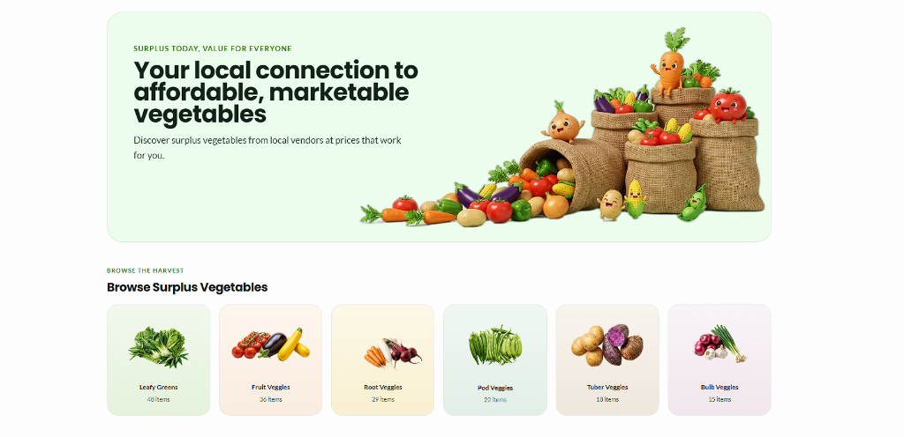

Three simple steps to rescue wholesome harvest, save money, and empower Davao local growers.
Discover surplus produce from local growers and market sellers across Davao. Good vegetables deserve a second chance.

Browse available surplus produce, check stock, and find options that fit your needs.
Present your reservation QR code to the seller and collect your produce with ease.